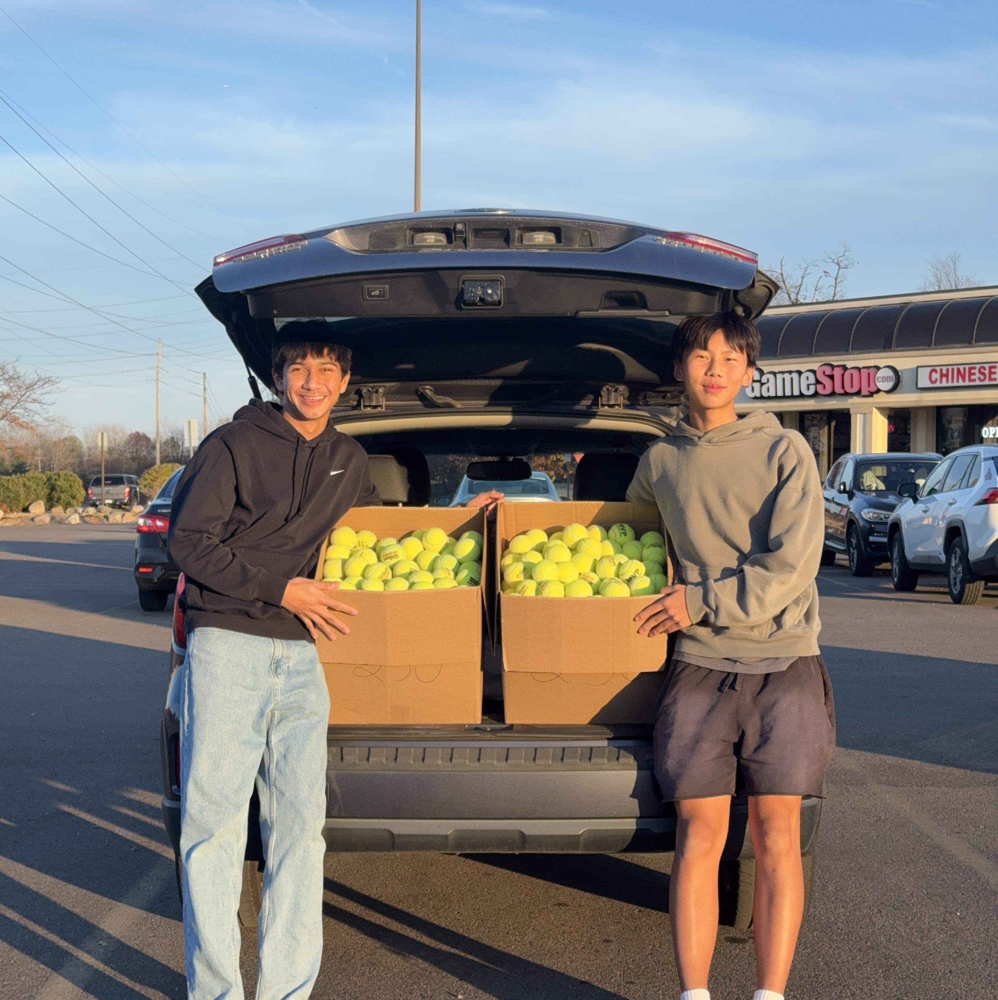

It is incredibly easy for a tennis player to throw away their dead tennis balls. Our goal is to make it just as easy for them to recycle them.
Help every tennis ball earn a second serve.
The Second Serve is a 501(c)(3) fiscally sponsored project that aims to reduce the amount of tennis balls that end up in a landfill. We collect tennis balls from participating facilities for free. Once collected, we pack and ship them to RecycleBalls where they are processed. We operate in Southwest Michigan and are in the process of expanding within Michigan.

1,150
Balls collected
1,000
Balls shipped
The Problem
01
02
Tennis balls can take over 400 years to break down in a landfill.
Source: RecycleBalls / United States Tennis Association (USTA) sustainability estimates on vulcanized rubber decomposition.
Every time we visited a local park to play tennis, we saw hundreds of balls outside the fences. We needed to find a solution.
How it Works
Collection
New facilities can participate by emailing, calling, or texting us. Once the facility has used their balls, we collect them for free.
Shipping
We count, pack, and ship the balls to RecycleBalls.
Recycling
RecycleBalls uses their “Green Machine” to remove the outer fuzz and break down the inner rubber. The resulting product is suitable for playgrounds, horse footing, and even creating new tennis courts.
Our Impact
Participating facilities
- Maple YMCA
- Portage YMCA
- Portage Central High School
Shipment history
- Two shipments completed.
- 1000 tennis balls shipped.
- Four packages sent through UPS Ground.


Interested?
We encourage any interested facilities to reach out to learn more about our pickup program and installing collection bins.